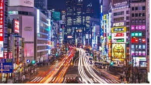

То́кио (яп. 東京 То:кё: (инф.), «Восточная столица»[4][5]) — столица Японии, её административный, финансовый, промышленный и политический центр. Крупнейшая городская экономика мира[6]. Расположен в юго-восточной части острова Хонсю, на равнине Канто в бухте Токийского залива Тихого океана. Помимо столицы, Токио также является одной из сорока семи префектур страны. Площадь префектуры составляет 2188,67 км²[7], население — 13 742 906 человек (1 октября 2017)[8], плотность населения — 6279,11 чел./км². По состоянию на 1 мая 2020 года население Токио составляло 14 002 973 человека, что делает Токио префектурой с самым большим населением в Японии.[9] Большой Токио является городской территорией с самым большим населением в мире, с населением по состоянию на 2016 год в 38 140 000 человек.[2]
 open my second saitТокийский столичный округ — административная единица Японии, включающая в себя специальные районы Токио, область Тама и островные территории Токийского столичного округа (острова Идзу и Огасавара)
Основан в 1457 году как замок Эдо. В 1869 году в ходе реставрации Мэйдзи в Эдо была перенесена столица государства и город переименован в То:кё: (яп. 東京), что на японском означает восточная столица, кандзи 東 (онъёми: «то:») — восток и 京 (онъёми: «кё:») — столица. Предыдущая столица — Киото — ранее именовалась «Сайкё» — «западная столица». Русская традиционная форма написания — Токио[10].
У столицы имеются свои официальные символы — герб, флаг, знак, цветок, дерево и птица.
Токио имеет много отдалённых островов, один из которых удалён на 1850 км от центральной части Токио. Из-за большого расстояния от административной штаб-квартиры столичного правительства в Синдзюку острова управляются администрацией округов Токио